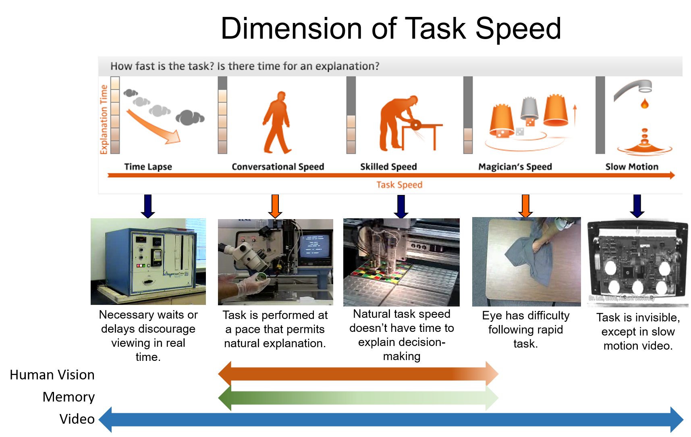
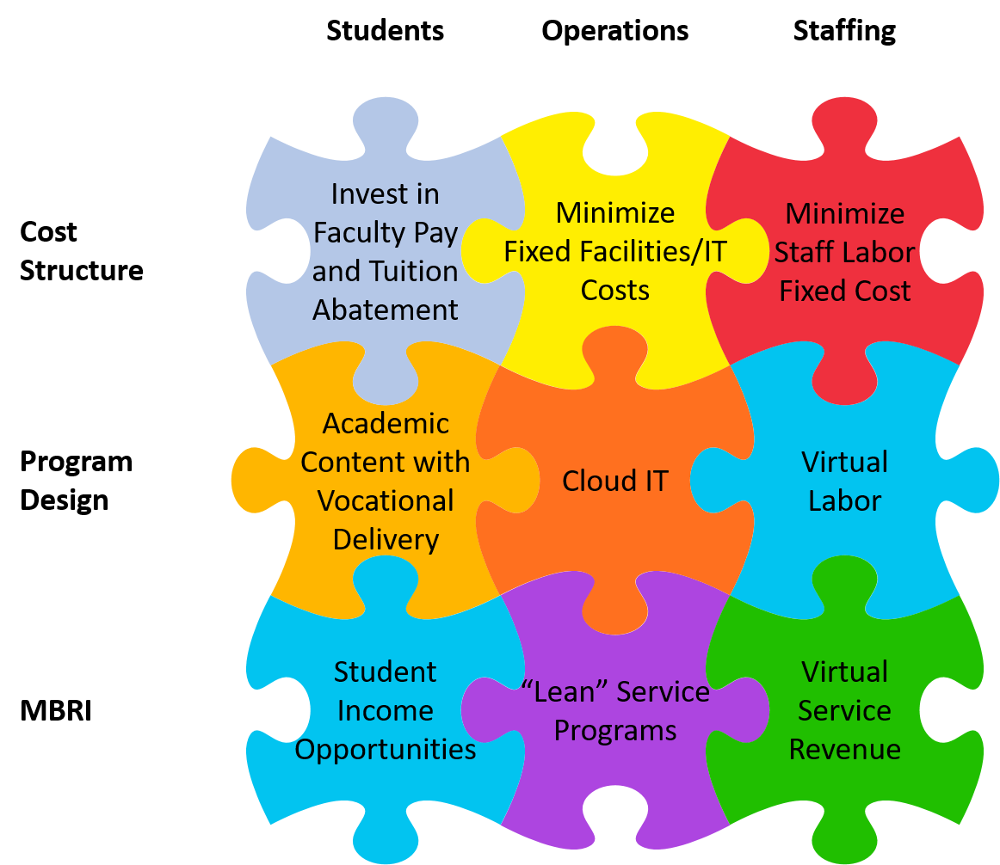
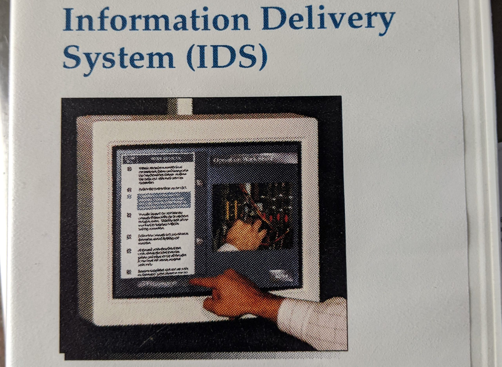
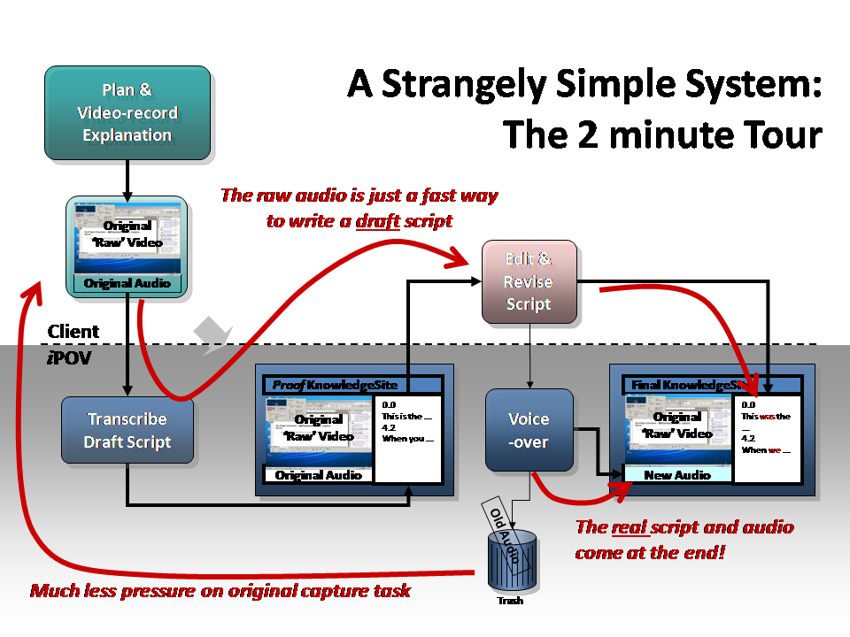

EduOpsLab didn't start as a theory. It grew from three overlapping careers: academic research into how people learn and forget, a decade of building eLearning production systems at industrial scale, and a classroom observation platform that was piloted in 300+ schools before a patent lawsuit forced it off the market. Every idea in the framework traces back to something that was built, tested, or taught.
1991–2012 Auburn University — College of Business
21 years teaching operations management and supply chain in the Management Department, later in Aviation Management & Supply Chain. The practitioner-teacher identity — and the daily frustration with how education systems waste teacher time — is the origin of everything in EduOpsLab.
1994 Population of Learners

I was given access to corporate training data for an apparel manufacturer. There were records of thousands of employees who were learning how to sew t-shirts and similar garments. David Nemhard and I developed a model of learning that modelled individual behavior as a stepping stone to modelling group behavior. This is the foundation of "students as factor inputs" — the co-production thesis.
1994 Management Control Systems

I began my fascination with the concept of management control and it has continued ever since. Academics don't like to talk about "control", but it is central to the management process and we need to understand it in all its forms. This feeds directly into the governance and control layer of education systems.
1999 Studying Learning AND Forgetting

I collected large volumes of operator learning data at Chrysler. Two colleagues and I used that to build a model that accounted for patterns of learning, but also captured how performance was lost when a worker was moved away from the task. This directly supports the flow-vs-batch argument: if you pull someone off a task, they lose skill.
2010 Dimensions of Perception with Video

I worked for a while with an industrial engineering PhD student and, from that interaction and with iPOV on the side, I commissioned a series of graphics that summarized what humans can see versus what a video camera can see. A unique contribution to observation methodology — part of the ADV lineage.
2012 Teaching Outside to Inside

Even before we moved to Atlanta, I was fascinated with the idea of using mobile networks to teach. By 2012, the technology pieces fell into the puzzle. I hopped around Atlanta with a laptop, a webcam and Verizon 4G. I delivered live lectures from the floor of a shipping dock, from a trade show floor, from the offices of Home Depot and Chick-fil-A logistics executives. Reality baby!
2015 Rethinking Higher Education

I was briefly drawn into the efforts of Morris Brown College to resurrect itself from oblivion. Their situation was dire, so I tried to think outside the box and find a teaching model that could work at much lower cost. Nothing came of it, but the exercise gave me some insights and ideas. The same instinct behind EduOpsLab's constraint analysis.
1996 Chrysler IDS Video Training System

Chrysler's Huntsville AL electronics plant spent nearly 2 years investigating and evaluating how to apply cutting edge video editing tools to the production of plant floor training materials. Although Chrysler ultimately declined to move forward, this project set me off on a 25 year quest to understand how video can be used in day-to-day business operations.
1997 Building eLearning Tech (iPOV)

Over a 10 year period, iPOV developed a collection of cool web software tools for eLearning. Technologies included Flash ActionScript, XML, and video. Some of our best stuff used Flash to put dynamic, interactive layers over standard video. That wasn't really replicated in web video for at least a decade.
1998 Employment "Farm Team"
For a decade iPOV relied on work by part-time Auburn students. They so consistently exceeded expectations that most ended up in great jobs after graduation. From this experience, I evangelized for the concept that universities could support an ecosystem of "farm team" companies for large employers. No one seemed interested, but I am still convinced it is an excellent and practical idea. Co-production in action.
1999 iPOV Processing Workflow

iPOV developed a workflow for eLearning production that cut conventional development time and cost by at least 75%. It remained iPOV's hallmark for nearly 20 years. I still use it today for my personal work. Flow optimization applied to educational content.
2002 eLearning Design Patterns

One of iPOV's secret weapons was a system of simple design patterns for eLearning. They were designed to make it easy and foolproof to build material that was clear and accurate. Process standardization for educational output.
2004 Framework of Technical Explanation

iPOV made so many technical manuals (about 500 projects all told) that we became very methodical about their structure. I crafted a 2 page model that guided the structure of almost all of our materials. Systematic instructional design methodology.
2007 Video Speaks Every Language (Michelin)

A Michelin subsidiary hired iPOV to build video courses on their operations. iPOV's methodical process made it easy to construct the courses … then translate them into other languages. Operations methodology applied to content localisation.
2010 ADV Tracking System
A Deeper View (ADV) was a web-based, cloud-hosted SaaS platform that captured real-time classroom observations of student performance. It was built on the principle of "one-touch technology" — observations recorded with a single button press in naturally occurring time gaps during class.
ADV was piloted in 300+ public and private schools before a patent lawsuit forced it off the market for four years. The core ideas — micro-observations, individualized rubrics, process measurement over output testing — are the direct intellectual lineage of ObservationTracker.
2013 New eLearning Production Workflow

When I shut down the Auburn iPOV operation, I had to invent a new eLearning production process that would work with remote freelancers. With the advances in Adobe Creative Suite and Microsoft SharePoint, it actually works pretty well. Distributed educational content production.
2014 Software Sales Training (Siemens PLM)

I constructed seven detailed courses to train Siemens PLM sales personnel around the world. The courses covered sales techniques, product knowledge and corporate sales management. Scalable training at global enterprise level.
2015 Using Video to Teach Soft Skills

I developed sales training courses for a global multinational tech company. The key to my design was to use video to explain complex situations that text and graphics could not capture. Video for the hardest teaching problems.